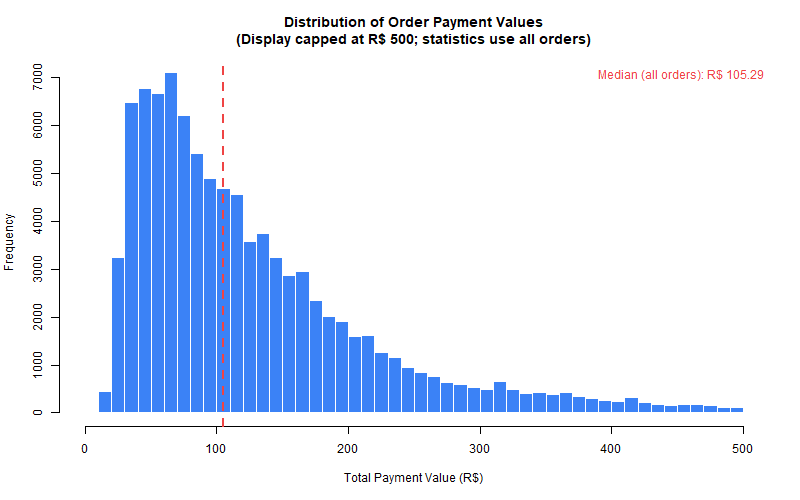
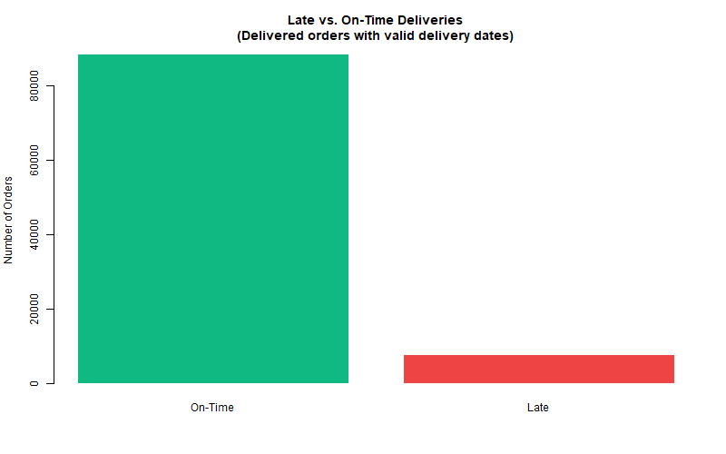
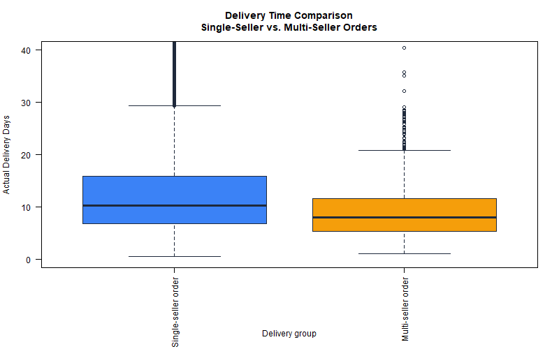
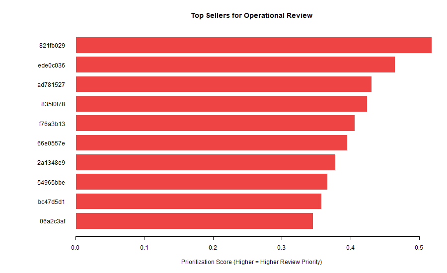

Scale Up E-Commerce Performance Assistant
Final Compilation Report — Dynamic Operations Analysis in R
Introduction
Modern e-commerce operations depend on fast, reliable fulfillment across thousands of orders and hundreds of sellers. An e-commerce operations manager must monitor payment economics, freight costs, delivery speed, seller risk, and data quality before changing staffing, SLAs, or audit priorities.
The Scale Up E-Commerce Performance Assistant addresses this need using a Level 2 Quarto statistical website built entirely in R. The tool supports decisions about:
- baseline delivery and payment performance,
- whether multi-seller coordination affects delivery time,
- which orders merit late-delivery screening,
- monthly volume and revenue trends,
- which sellers to review first,
- whether processed data are trustworthy enough for reporting.
The Olist Brazilian E-Commerce Public Dataset provides the empirical foundation. Because the reviews file was unavailable, review-score simulation was rejected and Skill 3 was redesigned around real late-delivery outcomes.
Dataset
The analysis uses six Olist tables joined at the order level after pre-aggregation to prevent revenue inflation from one-to-many relationships between orders, items, and payments.
| Table | Grain | Role |
|---|---|---|
| Orders | One row per order | Status, purchase date, delivery timestamps |
| Customers | One row per customer | Geographic attributes |
| Order items | One row per line item | Price, freight, seller |
| Payments | One row per installment | Payment value and method |
| Products | One row per product | Catalog attributes |
| Sellers | One row per seller | Merchant identifiers |
Joining strategy: item and payment tables are aggregated to one row per order_id before joining to orders. The processed order-level dataset contains 99,441 rows; the seller-order dataset contains seller-level records for prioritization.
Key processed fields include total_payment_value, total_freight_value, actual_delivery_days, late_delivery, single_seller_order, and purchase_month. Validation helpers in R/validation_helpers.R enforce variable existence, grouping rules, and logical consistency before each skill runs.
Explore Skill
Business question
What do order value, freight cost, delivery time, status mix, and late-delivery patterns look like across the platform?
Method
Descriptive statistics, missing-value counts, status tables, and distribution plots on the processed order-level dataset.
Results
| Metric | Value |
|---|---|
| Total orders | 99,441 |
| Delivered/completed orders | 96,478 |
| Canceled or unavailable orders | 1,234 |
| Missing actual delivery dates | 2,965 |
| Median payment value | R$ 105.29 |
| Median freight value | R$ 17.09 |
| Median delivery time (completed) | 10.22 days |
| Late deliveries | 7,826 |
| Late-delivery rate | 8.11% |
Payment values are right-skewed: the median (R$ 105.29) is lower than the mean (R$ 160.99), indicating a long tail of high-value orders. Among completed orders with valid delivery durations, 8.11% arrived after the estimated delivery date.

Decision supported
These benchmarks help managers set realistic SLAs, freight expectations, and baseline late-delivery monitoring thresholds.
Compare Skill
Business question
Do multi-seller orders take longer to deliver than single-seller orders?
Method
Completed, non-canceled orders with valid delivery durations were split by single_seller_order. Because delivery times are skewed and contain outliers, a Wilcoxon rank-sum test was selected (Wilcoxon rank-sum test). The reported location shift uses the Hodges–Lehmann estimator (multi minus single).
Results
| Group | N | Median delivery days |
|---|---|---|
| Single-seller | 95,195 | 10.25 |
| Multi-seller | 1,275 | 7.93 |
- Hodges–Lehmann location shift (multi − single): -2.28 days
- 95% confidence interval: [-2.61, -1.99] days
- p-value: 5.1e-50

Interpretation
Multi-seller orders have a shorter median delivery time (7.93 vs. 10.25 days). The negative location shift (-2.28 days) is statistically significant, but this is observational data. We cannot conclude that adding sellers causes faster delivery; unmeasured confounders such as product category, region, or carrier assignment may explain the association. Managers should treat this as a descriptive fulfillment comparison, not proof of coordination efficiency.
Model Skill
Business question
Which order characteristics are associated with late delivery among completed orders?
Method
Logistic regression on 96,469 completed orders with valid delivery timestamps and predictors. The data were split 77,175 training / 19,294 test with stratification on late_delivery. Late prevalence is 8.11%. Because the minority class is rare, the classification threshold was selected on training data only using Youden’s J: 0.081.
Monetary predictors use log1p transforms when skewness exceeds 1. Odds ratios describe multiplicative changes on the log-odds scale; they must not be read as one-real changes in raw payment or freight amounts.
Test-set performance
| Metric | Value |
|---|---|
| Accuracy | 0.672 |
| Sensitivity | 0.671 |
| Specificity | 0.672 |
| Precision | 0.153 |
| F1 score | 0.249 |
| ROC AUC | 0.721 |
| Term | Coefficient | p-value | Odds ratio | OR lower | OR upper | |
|---|---|---|---|---|---|---|
| 1 | (Intercept) | -1.2403 | 0.0575 | 0.0804 | 0.0224 | 0.2893 |
| 31 | seller_count | -1.7227 | 0.0000 | 0.1048 | 0.0615 | 0.1786 |
| 4 | log1p_total_freight_value | 0.7099 | 0.0000 | 1.9037 | 1.7819 | 2.0339 |
| 3 | item_count | -0.4097 | 0.0000 | 0.6196 | 0.5782 | 0.6639 |
| 5 | log1p_total_item_price | -0.0517 | 0.0045 | 0.9164 | 0.8843 | 0.9497 |
| 2 | estimated_delivery_days | -0.0472 | 0.0000 | 0.9496 | 0.9454 | 0.9539 |
| 6 | maximum_installments | 0.0150 | 0.0112 | 1.0034 | 0.9919 | 1.0151 |
Interpretation
Accuracy near 0.672 is misleading because predicting the majority on-time class would achieve similar accuracy while catching almost no late orders. Precision is only 0.153, so most flagged orders would still be on time. The model is therefore a screening tool for operational follow-up, not an automatic approve/reject rule. ROC AUC of 0.721 shows moderate discrimination. All coefficients represent associations, not causal effects.
Monthly Sales Trend Analysis
Business question
How did monthly completed-order volume and total payment value change from 2016-09 to 2018-08?
Method
Monthly aggregation of completed orders with valid purchase month and payment value, plus month-over-month percentage changes. Boundary months with partial tracking windows (2016-09) and low-volume months are excluded from MoM comparisons.
Results
- Completed orders analyzed: 96,478
- Total payment value: R$ 15,422,461.77
- Peak complete month (orders): 2017-11 — 7,289 orders, R$ 1,153,528.05 payment value
- Largest order-volume increase: 2017-02 (120.4% MoM)
- Largest order-volume decrease: 2017-12 (-24.4% MoM)
| Month | Completed orders | Orders MoM % | Payment (R$) | Payment MoM % | |
|---|---|---|---|---|---|
| 2 | 2016-10 | 265 | 26,400.00 | 46,566.71 | NA |
| 4 | 2017-01 | 750 | 74,900.00 | 127,545.67 | 649,979.87 |
| 5 | 2017-02 | 1,653 | 120.40 | 271,298.65 | 112.71 |
| 6 | 2017-03 | 2,546 | 54.02 | 414,369.39 | 52.74 |
| 7 | 2017-04 | 2,303 | -9.54 | 390,952.18 | -5.65 |
| 8 | 2017-05 | 3,546 | 53.97 | 567,066.73 | 45.05 |
| 9 | 2017-06 | 3,135 | -11.59 | 490,225.60 | -13.55 |
| 10 | 2017-07 | 3,872 | 23.51 | 566,403.93 | 15.54 |
| 11 | 2017-08 | 4,193 | 8.29 | 646,000.61 | 14.05 |
| 12 | 2017-09 | 4,150 | -1.03 | 701,169.99 | 8.54 |
| 13 | 2017-10 | 4,478 | 7.90 | 751,140.27 | 7.13 |
| 14 | 2017-11 | 7,289 | 62.77 | 1,153,528.05 | 53.57 |
| 15 | 2017-12 | 5,513 | -24.37 | 843,199.17 | -26.90 |
| 16 | 2018-01 | 7,069 | 28.22 | 1,078,606.86 | 27.92 |
| 17 | 2018-02 | 6,555 | -7.27 | 966,510.88 | -10.39 |
| 18 | 2018-03 | 7,003 | 6.83 | 1,120,678.00 | 15.95 |
| 19 | 2018-04 | 6,798 | -2.93 | 1,132,933.95 | 1.09 |
| 20 | 2018-05 | 6,749 | -0.72 | 1,128,836.69 | -0.36 |
| 21 | 2018-06 | 6,099 | -9.63 | 1,012,090.68 | -10.34 |
| 22 | 2018-07 | 6,159 | 0.98 | 1,027,903.86 | 1.56 |
| 23 | 2018-08 | 6,351 | 3.12 | 985,414.28 | -4.13 |


Interpretation
Volume and revenue rose sharply during 2017, with 2017-11 as the busiest month. November 2017 coincides with Black Friday, which is a plausible operational explanation, but seasonality is not statistically proven here. Month 2016-11 is missing from the series and should be annotated in any dashboard. Managers can use these trends for staffing and revenue planning while treating boundary months cautiously.
Seller Prioritization
Business question
Which sellers should an operations manager review first?
Method
Of 3,095 sellers in the processed seller-order table, 804 met eligibility: at least 20 total seller-order records and 20 valid delivered orders. A weighted risk score ranks eligible sellers:
priority_score = 40% * late_delivery_rate_norm + 25% * canceled_or_unavailable_rate_norm + 20% * positive_median_delay_norm + 15% * log1p(order_volume)_norm
Higher scores indicate higher operational review priority.
Top 10 priority sellers
| Rank | Seller ID | Seller-order records | Valid deliveries | Late rate | Cancel/unavail. rate | Median delay (days) | Priority score |
|---|---|---|---|---|---|---|---|
| 1 | 821fb029fc6e495ca4f08a35d51e53a5 | 28 | 24 | 0.375 | 0.036 | 0 | 0.518 |
| 2 | ede0c03645598cdfc63ca8237acbe73d | 46 | 43 | 0.349 | 0.022 | 0 | 0.464 |
| 3 | ad781527c93d00d89a11eecd9dcad7c1 | 44 | 38 | 0.316 | 0.023 | 0 | 0.431 |
| 4 | 835f0f7810c76831d6c7d24c7a646d4d | 44 | 42 | 0.310 | 0.023 | 0 | 0.424 |
| 5 | f76a3b1349b6df1ee875d1f3fa4340f0 | 24 | 24 | 0.375 | 0.000 | 0 | 0.406 |
| 6 | 66e0557ecc2b4dbea057e93f215f68d8 | 31 | 30 | 0.267 | 0.032 | 0 | 0.395 |
| 7 | 2a1348e9addc1af5aaa619b1a3679d6b | 52 | 48 | 0.271 | 0.019 | 0 | 0.378 |
| 8 | 54965bbe3e4f07ae045b90b0b8541f52 | 78 | 73 | 0.301 | 0.000 | 0 | 0.366 |
| 9 | bc47d5d1490df2b36add65d733eafaba | 24 | 21 | 0.095 | 0.083 | 0 | 0.357 |
| 10 | 06a2c3af7b3aee5d69171b0e14f0ee87 | 392 | 389 | 0.231 | 0.000 | 0 | 0.345 |

Interpretation
The highest-priority seller (821fb029fc6e495ca4f08a35d51e53a5) has a late-delivery rate of 37.50% and priority score 0.518. Because delivery outcomes are recorded at the order level, multi-seller orders assign the same delivery result to each participating seller. Seller rankings should therefore be interpreted as a prioritization aid, not a definitive blame assignment.
Data Quality Audit
Business question
Are missing values, duplicates, inconsistent dates, or payment mismatches affecting analysis?
Method
Programmatic checks on raw and processed tables with severity labels (High, Warning, Information).
Summary
- Total issues summarized: 27
- High: 4
- Warning: 8
- Information: 15
- Duplicate processed order keys: 0
- Missing actual delivery dates: 2965 (~2.98% of orders)
| Issue | Count | Percent | Severity | |
|---|---|---|---|---|
| 10 | zero_payment_values | 4 | 0.004 | Warning |
| 11 | missing_purchase_dates | 0 | 0.000 | Warning |
| 12 | missing_estimated_delivery_dates | 0 | 0.000 | Warning |
| 14 | actual_delivery_before_purchase | 0 | 0.000 | High |
| 15 | estimated_delivery_before_purchase | 0 | 0.000 | High |
| 16 | approval_before_purchase | 0 | 0.000 | High |
| 17 | delivered_without_actual_delivery_date | 8 | 0.008 | High |
| 18 | canceled_or_unavailable_with_actual_delivery_date | 6 | 0.006 | Warning |
| 19 | orders_without_item_records | 775 | 0.779 | Warning |
| 20 | orders_without_payment_records | 1 | 0.001 | Warning |
| 25 | missing_or_invalid_seller_count | 775 | 0.779 | Warning |
| 27 | missing_months_in_time_series | 1 | 4.348 | Warning |
Notable findings include 775 orders without item records, 1 order without payment, 8 delivered orders without actual delivery date, 6 canceled/unavailable orders with delivery dates, 4 zero-payment orders, 1033 payment reconciliation differences beyond R$0.05, 1278 multi-seller orders, and missing month 2016-11 in the time series.
Decision supported
Managers should resolve High-severity timestamp and delivered-status issues before trusting delivery KPIs, and treat payment mismatches as review items rather than automatic errors (vouchers and installments may explain differences).
Google Antigravity and Agent Skills
This project used Google Antigravity for initial scaffolding and Agent Skills (SKILL.md files) to standardize development. Later Cursor agents completed validation, statistical corrections, Quarto integration, and this final report.
| Phase | Request | Output | Student review |
|---|---|---|---|
| Structure | Create Level 2 Quarto website skeleton | _quarto.yml, page scaffolds |
Accepted layout; renamed Skill 3 after reviews file was missing |
| Data audit | Inspect CSV grains and join risks | dataset.qmd, import/clean drafts |
Accepted pre-aggregation concept; added stronger validation later |
| Skill scaffolds | Create six SKILL.md files |
skills/*/SKILL.md |
Accepted format; rejected simulated review scores |
Rejected redesign: Once olist_order_reviews_dataset.csv was confirmed unavailable, review-score simulation was rejected and the project was rebuilt around real late-delivery modeling.
Application or Delivery
Operations managers render the website from the project root:
& "C:\Scale Up_Project\Original working Scale Up AI Manager\bin\quarto.exe" renderThe static site is published to _site/index.html. The final report renders separately:
& "C:\Scale Up_Project\Original working Scale Up AI Manager\bin\quarto.exe" render report/final_report.qmdEach Quarto page documents one skill; processed CSV/RDS outputs in output/ and data/processed/ support audit trails. The tool is intended for local or intranet deployment as a decision-support dashboard, not autonomous order routing.
Limitations
- Dataset limitation: The Olist reviews file is missing, historical coverage ends in 2018, and
2016-11is absent from monthly trends. Approximately 2.98% of orders lack actual delivery dates. - Statistical limitation: All comparisons and regression results are associative. Class imbalance makes accuracy misleading for late-delivery prediction, and seller metrics inherit shared order-level delivery outcomes for multi-seller orders.
- Implementation limitation: Analyses use base R for stability; the website excludes the final report from default site render (
!report/final_report.qmdin_quarto.yml) to keep PDF compilation separate. Plot regeneration depends on running analysis scripts during report render.
Reflection
This project reinforced how operational analytics depends as much on data engineering as on modeling. Pre-aggregating one-to-many tables, validating joins, and documenting exclusions prevented inflated revenue and false conclusions. The hardest steps were correcting seller eligibility rules, choosing robust nonparametric tests for skewed delivery times, and explaining why a statistically significant multi-seller difference does not imply causation.
The three additional skills—monthly trend analysis, seller prioritization, and data quality audit—were selected because an operations manager needs more than descriptive charts and one hypothesis test. Trends support staffing, prioritization converts seller performance into actionable review lists, and the audit builds trust before KPIs reach leadership.
With more time, I would add interactive filters by state or product category, externalize model thresholds by business cost, capture a website screenshot for documentation, and explore survival models for time-to-delivery rather than binary lateness only.